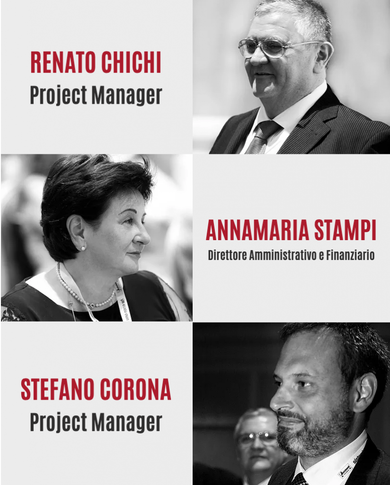

{% if page.header.overlay_color or page.header.overlay_image or page.header.image %}
{% include page__hero.html %}
{% elsif page.header.video.id and page.header.video.provider %}
{% include page__hero_video.html %}
{% endif %}


<section class="page">
    <!-- ***** Page Top Start ***** -->
    <div class="cover" data-image="{{ site.baseurl }}/assets/images/photos/header-min.jpg">
        <div class="cover-top">
            <div class="container">
                <div class="row">
                    <div class="offset-lg-3 col-lg-6">
                        <h1>Chi Siamo</h1>
                    </div>
                </div>
            </div>
        </div>
        <div class="cover-bottom">
            <div class="container">
                <div class="row">
                    <div class="col-lg-12">
                        <ol class="breadcrumb">
                            <li><a href="index.html">Home</a></li>
                            <li class="active">Chi Siamo</li>
                        </ol>
                    </div>
                </div>
            </div>
        </div>
    </div>
    <!-- ***** Page Top End ***** -->


    <!-- ***** Page Content Start ***** -->
    <div class="page-bottom">
        <div class="container">
            <div class="row">
                <div class="col-lg-12">
                    <div class="about">
                        <div class="row">
                            <div class="col-lg-6 col-md-6 col-sm-12 align-self-center">
                                <div class="about-image">
                                    
                                </div>
                            </div>
                            <div class="col-lg-6 col-md-6 col-sm-12 align-self-center mobile-top-fix">
                                <h2>Sistemi Uno Roma</h2>
                                <h3>Le persone sono la nostra tecnologia</h3>
                                <p>Siamo nati nel 1997 da un’idea dei soci fondatori di aiutare le aziende e gli studi dei professionisti con soluzioni e servizi sempre strutturate e di alto livello. <br>

                                    La nostra consulenza non si limita agli aspetti tecnici ma tiene conto sempre dei seguenti principi:<br>

                                    - contenimento ed ottimizzazione dei costi;<br>
                                    - integrazione nei processi;<br>
                                    - dinamismo e scalabilità nel tempo;<br>
                                    - formazione delle persone<br>
                                    - assistenza alle organizzazioni<br>

                                    Il 12 giugno 2017 abbiamo raggiunto il traguardo dei primi 20 anni di attività. Ciò è stato possibile, grazie ad i nostri clienti che ci hanno sempre rinnovato la loro fiducia ed alla Sistemi spa, software house di eccellenza che ci ha supportato con costanza, innovazione e soluzioni tecnologiche sempre all’avanguardia.<br>

                                    Per quanto sopra, siamo Partner Sistemi Città, la massima espressione della competenza sul territorio per le soluzioni destinate ad Aziende, Commercialisti e Consulenti del lavoro.</p>
                                <a href="{{ site.baseurl }}/contattaci/" class="btn-line">Contattaci</a>
                            </div>
                        </div>
                    </div>
                </div>
            </div>
        </div>
    </div>
    <!-- ***** Page Content End ***** -->
</section>

{% include cookie-consent.html %}


	